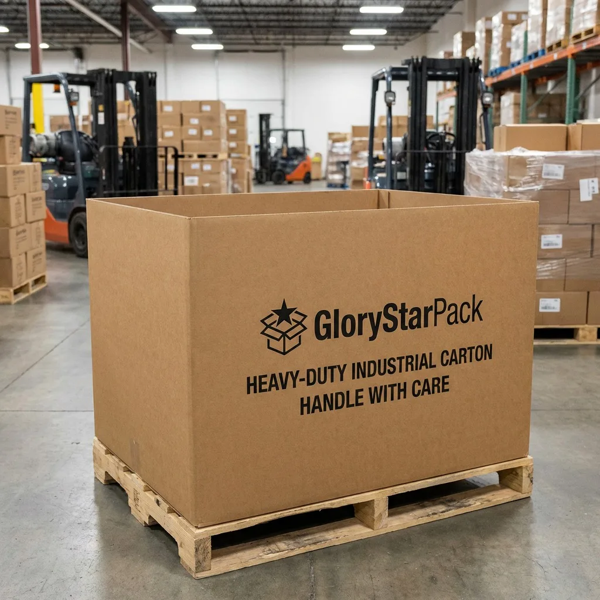

Use this page for the right job
An RFQ controls the question; it does not manufacture the answer.
This template is for boxes, labels, printed tissue, hang tags, inserts, bags, tubes, and related packaging components. It separates buyer facts from supplier proposals and creates a visible return format. The goal is not to force every supplier into the same manufacturing route. The goal is to see where a supplier meets the requested scope, proposes an alternative, or leaves a decision unresolved.
Use the custom packaging cost and MOQ guide to understand the drivers behind pricing. Use this RFQ page to issue and normalize the request. When the scope is ready, send it through the production quote form for technical review.
One rule prevents most false comparisons: create one row for each configuration × quantity tier × delivery basis. Never let one supplier quote 1,000 units EXW while another quote quietly includes tooling, packing, and delivery to your warehouse.
Free RFQ coverage planner
Count the responses you should receive.
Enter the scope you issued and the usable information returned. The planner counts matrix coverage only. A filled cell can still be technically wrong, commercially unacceptable, or unsupported.
Required fields per line might include unit price, construction, MOQ, lead-time basis, packing, carton dimensions, carton weight, freight scope, validity, payment term, exclusions, and deviations. Define your own list before issuing the RFQ.
Community demand signals
The recurring problem is uncontrolled scope.
These buyer discussions helped define the page. They are community experiences, not universal evidence or endorsements of any supplier.
Low quantities meet hidden setup costs.
Small-business buyers describe a gap between plain short runs and large branded minimums, plus unclear timelines, setup charges, and rush fees. The RFQ therefore separates quantity tiers and one-time charges.
Read the Reddit discussionSimilar requests return very different totals.
A first-time buyer reported wide price variation, different deposit expectations, and uncertainty about when design and samples are finalized. The template gives payment, sample, artwork, and quote-revision fields their own owners.
Read the Reddit discussionA custom minimum can exceed proven demand.
Brands often want to avoid inventory that may change before sell-through. Request a pilot, target, and repeat tier without assuming every tier will use the same process or unit economics.
Read the Reddit discussionStep 1 · Freeze buyer inputs
Give every configuration a stable identity.
A quotation cannot stay comparable if “the box” changes meaning in the middle of the conversation.
Scroll horizontally to view all columns →
| Input group | Record in the RFQ | Do not leave implicit |
|---|---|---|
| Identity and revision | RFQ ID, revision, project, component, configuration ID, SKU, artwork version, language or market version. | Whether several artworks share a structure, quantity, tool, or production run. |
| Product facts | Maximum assembled dimensions and weight, orientation, fragile or protected zones, contact restrictions, and representative component revision. | Whether dimensions describe a product, inside pack, outside pack, flat blank, or shipping case. |
| Package construction | Style, finished inside and outside size where relevant, material performance, board or film construction, insert, accessory, opening, closure, and tolerances. | Which items are buyer requirements and which may be supplier proposals. |
| Print and finish | Print process if controlled, colors and references, coverage, print side, artwork ownership, lamination, varnish, foil, emboss, texture, adhesive, and finish locations. | Color target versus guaranteed tolerance, and simulated versus production-equivalent effects. |
| Versions and demand | Quantity per configuration and artwork, requested tiers, repeat forecast, acceptable overrun or underrun, partial-delivery rule, and inventory constraint. | Whether the quoted MOQ is per structure, size, artwork, material, color, or order. |
When dimensions or artwork are not production-ready, link the RFQ to the dieline and artwork requirements guide. When board language is unclear, use the paper thickness and GSM guide. Identify which party must close each open item.
Step 2 · Define evidence
Ask what the sample, test, and document must prove.
“Sample included” is not a useful return field. A digital mock-up, plain structural sample, printed prototype, production-equivalent pre-production sample, and retained reference answer different questions. State the decision, sample quantity, charged amount, lead-time basis, shipping scope, acceptable simulations, review owner, and approval record.
- Fit, loading, removal, closure, and product movement
- Material, print, color, finish, adhesion, and appearance limits
- Pack-out, master-carton, handling, storage, and distribution risks
- Test method, sample conditioning, acceptance limit, report, and disposition owner
- Certificate or claim scope, holder, validity, product or material connection, and authorization
Use the packaging sample approval checklist to separate observations, measurements, simulations, open items, and production release.
Step 3 · Control quote returns
Request the same fields—without hiding alternatives.
A supplier may recommend a different construction. Keep that recommendation visible as a deviation or separate alternative configuration rather than silently replacing the requested baseline.
Scroll horizontally to view all columns →
| Return block | Fields to request | Comparison control |
|---|---|---|
| Commercial line | Configuration, quantity, currency, unit price, price basis, MOQ, validity, payment term, overrun or underrun, and taxes included or excluded. | One identifiable row per requested matrix combination. |
| Construction proposal | Finished size and basis, exact proposed materials, print, finish, insert, accessory, tolerance, assembly, and any substitutions. | Use a deviation field; never infer equivalence from a product name. |
| One-time charges | Engineering, cutting die, print plate, foil or emboss die, mold, setup, sample, inspection, and other conditional charges. | Show amount, currency, ownership, storage, reuse, and repeat treatment. |
| Timing | Artwork review, sample, approval-to-production, production, inspection, dispatch, transit estimate, and timing assumptions. | Do not combine production lead time with an unsupported arrival date. |
| Packing and shipment | Individual protection, flat or assembled state, units per master carton, external carton dimensions, gross weight, pallet basis, shipping marks, and volume basis. | Give the forwarder usable carton data; confirm after final pack-out. |
| Evidence and exceptions | Sample route, inspection, test report, required certificate or claim evidence, exclusions, assumptions, deviations, unresolved decisions, and supplier approver. | Blank is not agreement. Use accepted, proposed, not applicable with reason, or open. |
Turn the quoted stages into dated milestones with the packaging lead-time planner
Step 4 · Make delivery explicit
Write the rule, exact place, and version year.
The International Chamber of Commerce advises parties incorporating Incoterms® 2020 to state the chosen rule, named port, place or point, and version. “FOB price” or “DDP included” without a precise location and scope is not enough for comparison.
- DestinationCountry, postcode, warehouse address, port, terminal, or precise point appropriate to the selected rule.
- Included costExport handling, main carriage, insurance, import clearance, duties, taxes, destination charges, unloading, and final delivery as applicable.
- Packing basisConfirmed or provisional carton count, dimensions, gross weight, volume, pallets, and stack restrictions.
- Date basisRequested in-hand date, dispatch assumption, approval deadline, transit estimate, and responsibility for delays caused by open inputs.
Review ICC guidance on incorporating Incoterms® 2020, then use the packaging buyer Incoterms guide to prepare the commercial questions.

Step 5 · Normalize and decide
Resolve gaps before ranking suppliers.
A complete response is not automatically a good response. It simply makes the commercial and technical differences reviewable.
- 01
Validate the matrix
Confirm every configuration, quantity tier, and delivery basis has an identifiable supplier response. Flag combined or missing rows.
- 02
Reconcile the build
Compare dimensions, material construction, print, finish, inserts, accessories, tolerances, packing, and proposed substitutions against the controlled revision.
- 03
Separate cost layers
Keep recurring units, one-time charges, samples, inspection, packing, freight, duty, tax, and destination charges visible. Use the same usable delivered quantity.
- 04
Score evidence and execution
Review sampling route, technical answers, deviation quality, quality plan, timing assumptions, supplier verification, communication, and change control—not price alone.
- 05
Issue a comparison revision
Record clarifications in the RFQ and supplier quote revision. Do not rely on scattered chat messages to modify the approved scope.
Before issuing the purchase order, define the production lot, checkpoints, characteristics, sampling-plan owner, defect rules, carton checks, containment and release authority with the packaging quality inspection checklist.
Barcode note: if the packaging carries a barcode, name the data owner, symbology, size, placement, print orientation, verification or scan requirement, and artwork revision. GS1 notes that barcode type, size, placement, and quality depend on where it will be scanned and that package folds, flaps, edges, and other layers can obstruct it. Review GS1's barcode planning steps.
Buyer questions
Custom packaging RFQ FAQ.
Use these answers to set the scope before the first supplier response arrives.